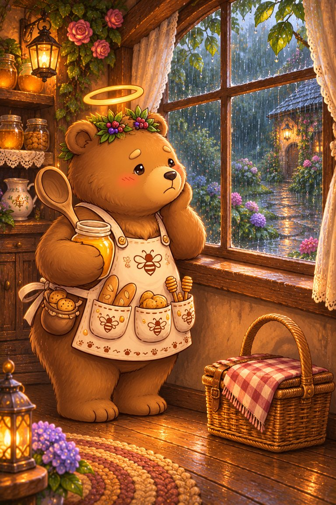
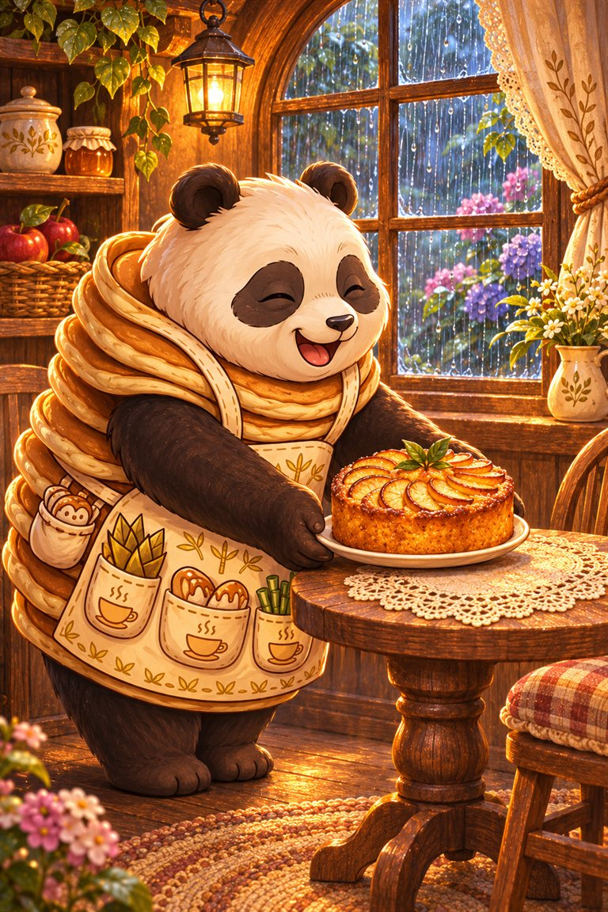
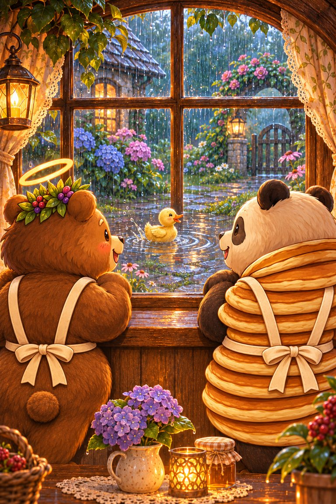
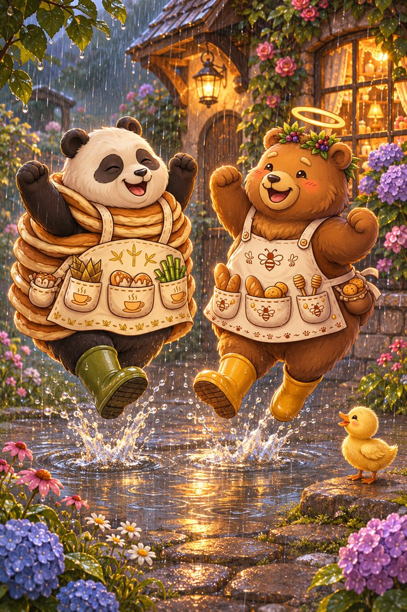
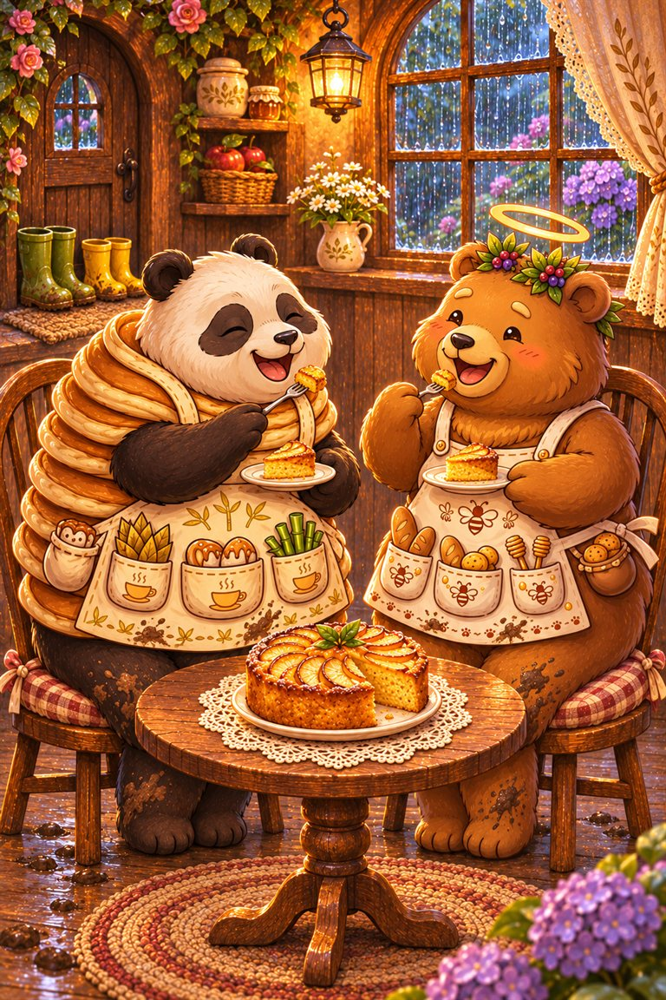

Page 1 of 5
It is a rainy day, and Ted-E-Bear is not happy. His sunny picnic will have to wait.
A five-page rainy-day story for practising y at the end of a word and -le endings, as in happy and puddle.
Read together: practise the focus sounds with an adult. This story uses wider vocabulary and is not a controlled independent decodable stage.
Tricky words to say together first: window, picnic, Ted-E-Bear.
6 printed pages · 1.4 MB · A4 or US Letter. Download PDF · Open PDF to printOpens in a new tab. Use the PDF viewer's Print control. To use less ink, read online and choose only the questions on page 6 in Print.

It is a rainy day, and Ted-E-Bear is not happy. His sunny picnic will have to wait.

Panda-Cake has a little idea. She sets a table by the window with an apple cake.

Ted looks out. There is a puddle in the middle of the path, and a duckling is paddling in it.

“That looks funny!” says Ted. They run out and jump in the puddle. Splash! They giggle.

They come in muddy and happy, and share the apple cake. A rainy day can be a jolly day too.
A puddle.
Funny.
Reading Trail step 8 is a free web book. Steps 1 to 6 are in SnackPack Sentences & Spelling, with longer stories, word packs and eight literacy games.
Explore another book · read togetherMeow-inara’s Moonlight Story
Know a family or class who would enjoy it?